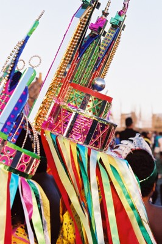

Qual a praia mais bonita de Alagoas?
Cultura
Uma mistura de raças, cores e sabores fazem de Alagoas um estado único. Da Serra da Barriga, vem a descendência negra de Zumbi. Dos arredores de Maceió, toda a cultura indígena e a rica culinária. Os trançados das linhas produzem as rendas; filé, boa noite, labirinto... e das palhas, bolsas, cestas e peças de design singular de consumo obrigatório. As danças alegres, o cruzar das fitas e espelhos do Guerreiro, transmitem a todos o verdadeiro espírito alagoano.
Alagoanos que fazem parte da História e Cultura
Zumbi dos Palmares – Criado por um padre, em Porto Calvo, aprendeu a ler e escrever. Líder nato, Zumbi constituiu o maior núcleo de resistência escravagista do Brasil, no chamado Quilombo dos Palmares, que tinha na época 30 mil integrantes. A sede era na Serra da Barriga, no município de União dos Palmares, a 86 km de Maceió.
Marechal Deodoro da Fonseca – Nasceu na cidade de Alagoas, que, em sua homenagem, a cidade passou a ter seu nome. Foi o Proclamador e Primeiro Presidente da República. Na casa onde nasceu funciona um museu com móveis, objetos e fotos, que retratam a sua história.
Marechal Floriano Peixoto - Segundo Presidente do Brasil, nascido no povoado de Ipioca, em Maceió, no ano de 1839.
Graciliano Ramos – Escritor, político, nasceu em Quebrangulo em 1892, mas foi na cidade de Palmeira dos Índios, onde foi prefeito, que ganhou projeção. Na cidade existe um museu que leva seu nome, contendo um importante acervo de suas obras e de sua vida.
Jorge de Lima – Poeta, natural de União dos Palmares. Na casa em que ele nasceu funciona um Centro Cultural, onde há um acervo sobre sua vida e obra.
Théo Brandão – Nascido em Viçosa, foi médico, farmacêutico, pesquisador, professor, poeta e folclorista. É reconhecido internacionalmente por suas pesquisas e dedicação à cultura popular.
Aurélio Buarque de Holanda - Nasceu em Passo de Camaragibe. Tinha uma inteligência privilegiada, apaixonado pelas palavras. Depois de muitos anos de pesquisas, em 1975, publicou o dicionário que leva seu nome. Ficou conhecido internacionalmente como “Mestre”. Fez muitos pronunciamentos sobre assuntos literários e lingüísticos, em vários países.
Nelson da Rabeca – Nasceu na cidade de Marechal Deodoro, e passou sua vida humilde trabalhando no corte da cana de açúcar. Já velho, dedicou-se à música. Com um pedaço de madeira de jaqueira, fabricou uma autêntica rabeca, semelhante ao violino, sendo bem rústico. Hoje é reconhecido nacionalmente.
FOLCLORE
GUERREIRO
O Guerreiro tem grande representatividade na cultura do Estado; é um folguedo genuinamente alagoano.
É uma mistura de vários autos: Reisado, Caboclinhos, Chegança e Pastoril. O Guerreiro surgiu entre os anos de 1927 e 1929. Os trajes são multicoloridos, usando-se fitas, espelhos, diademas, mantos e aljôfares. Os personagens são rei, rainha, índio, Peri e seus vassalos, lira.
Instrumentos musicais: sanfona, tambor e pandeiro.
BAIANAS
Esse folguedo não possui um enredo determinado. As baianas cantam uma seqüência constituída de marchas, peças variadas e, por fim, a despedida. As vestes são as convencionais de baianas e os instrumentos que acompanha são os de percussão.
TORÉ DE ÍNDIOS
De origem indígena, a dança é praticada desde 1740. Os índios dançavam para agradecer as divindades, ou para fazer suas orações. Os trajes são iguais aos dos seus antepassados. Os índios dançam em círculos, fazem coreografias simples e ritmadas.
BUMBA MEU BOI
Auto popular de temática pastoril que tem na figura do boi o personagem principal. Sua apresentação, em Alagoas, é semelhante a um teatro de revista. Consta de desfile de bichos que dançam ao som de cantigas entoadas por cantadores e acompanhadas por conjunto musical de percussão e apito.
CABOCLINHOS
Originário dos maracatus pernambucanos, a dança não tem enredo ou drama, sendo acompanhada por banda de pífano.
Vários personagens compõem esse folguedo: mestre, contramestre, embaixadores, vassalos, mateus, rei, lira, general, borboleta, estrela de ouro, rei catulé e caboclinho. Os trajes são: cocar, tanga, braceletes e perneiras de penas de peru, colares, brincos de dente, conchas ou sementes.
CAVALHADA
Cortejo e torneio a cavalo, em que a parte mais importante consiste na retirada de uma argolinha, com a ponta da lança, em plena corrida. São doze cavaleiros ou pares que estão dividido em cordões azul e encarnado.
Tem origem dos torneios medievais.
CHEGANÇA
É um auto marítimo de danças provenientes da Europa.
O cenário é uma barcaça armada especialmente para essas apresentações. Todo o bailado é cantado e o instrumento que acompanha é o pandeiro. São vários personagens: almirante, capitão, capitão-de-mar-e-guerra, mestre piloto, mestre patrão, padre-capelão, doutor cirurgião, oficiais inferiores, marujos e dois gajeiros.
COCO ALAGOANO
Dança de origem africana, cantada e acompanhada pelas batidas dos pés. Também denominada pagode ou samba. É executada na época junina ou em outras ocasiões, para festejar acontecimentos importantes da comunidade.
Personagens: mestre e dançadores.
Traje: roupa do dia-a-dia. Variações do estilo
Instrumento: Pandeiro
FANDANGO
Auto dramático de temática náutica, como a Chegança. Entoam-se cantigas náuticas de diversas épocas e origens, algumas, portuguesas, que falam de suas grandes navegações. Personagens: almirante, capitão, capitão-de-mar-e-guerra, mestre piloto, mestre patrão, oficiais, marujos e gajeiro. Trajes: oficiais com quepe de pala, paletó azul marinho com camisa e gravata preta, ornado de platinas e alamares, calças brancas, espadas e espadins; marujos de gorro e blusa maruja da mesma cor que a dos oficiais.
Instrumentos: rabeca e viola.
PASTORIL
É um fragmento dos presépios, constituído por jornadas soltas, executando-se a de boa-noite e da despedida. Personagens: mestra, contramestra, Diana; as pastorinhas, o pastor e a borboleta. Trajes: saias, blusas, faixas, aventais, chapéu de palhinha, nas cores azul e encarnado. Levam um pandeiro feito de lata, com cabo e sem tampa, ornado de fita com a cor do cordão a que pertence.
Acompanhamento: instrumentos de percussão e de sopro.
REISADO
Auto popular profano religioso formado por vários grupos de músicos, cantores e dançadores, que apresentam vários episódios.
Personagens: rei, rainha, embaixador, mestre ou secretário de sal, contramestre, mateus e palhaço. Trajes: saiote de cetim colorido, chapéu de aba larga guarnecido de espelhos redondos, flores artificiais e fitas variadas.
Instrumentos: sanfona, tambor e pandeiro.
VAQUEJADA
A vaquejada é muito difundida em Alagoas e no Nordeste como um todo. Os vaqueiros, montados em cavalos, correm em dupla. Um dos vaqueiros faz o papel de "esteira", para que o boi não saia pelo lado oposto ao do "puxador", que, segurando a cauda do animal, faz força para derrubá-lo de patas para cima. Na vaquejada cada lance envolve risco e exige coragem. Diz o ditado popular: “é um esporte de cabra macho".
Traje: Roupa comum, geralmente acompanhado de proteções usadas pelos vaqueiros.
ARTESANATO
Filé - Renda de origem portuguesa, confeccionada pelas artesãs de Alagoas. Dos teares saem lindas peças como colchas, toalhas, peças femininas etc.
Labirinto - É considerado um tipo de renda feita com capricho e glamour. Redendê, Ponto de Cruz, Boa-Noite, Bordado feitos com linhas coloridas para fabricação de colchas, pano de mesa, saias, blusas, fronhas, toalhas.
Bilro - Um delicado tipo de bordado, feitos com pequenos bastões, que entrelaçados com linhas, dão origem a um tipo de renda.
Madeira – Troncos de jaqueiras e coqueiros, esculpidos pelas mãos ágeis dos artesãos que transformam o entalho em imagens religiosas, bichos, móveis, peças decorativas e carrancas, muito usadas nas embarcações que navegam pelo o Rio São Francisco.
Barro - A arte de transformar a argila em produtos de utilidade, decoração, peças decorativas e utensílios domésticos. São confeccionados em vários municípios. Casca de coco – Utilizando-se do produto, artesãos confeccionam belas esculturas e xaxim para plantas
Palhas - Palha de ouricuri, taboa, cipó e coqueiro são matérias-primas muito utilizadas no artesanato alagoano. No trançado de palha são fabricadas bolsas, chapéu, abano, vassoura e esteiras. No trançado de cipó são fabricados cestas, balaios, samburás, caçuás, urupembas, esteiras etc.